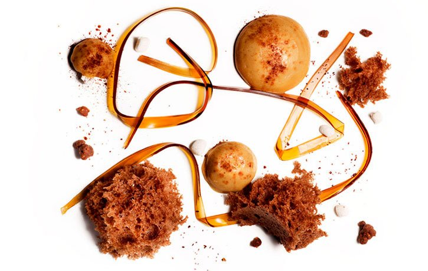

Espresso Pasta & Foam with Chocolate Sponge Cake

This espresso and chocolate dessert combines three techniques developed by Chef Ferran Adria at el Bulli: gel pasta, foam and 40s microwave sponge cake. With the help of an iSi Whip and a paper cup, you can easily make the fluffiest sponge cake in just 40 seconds in your microwave! As we have explained before in the “Black Sesame Sponge Cake and Miso” recipe, the secret of the el Bulli 40 second microwave sponge cake is to make an airy foam batter based on eggs using an iSi Whip and then cook it in a paper cup in a microwave. Unlike traditional cake batters, this one is mostly eggs with some sugar, the flavorful ingredient and a little flour. The espresso pasta is made using the technique invented by Ferran Adria of producing a thin film of a jellified liquid using Gellan Gum and then cutting it in stripes using a pasta cutter. This is the same technique we showcased in the “Saffron Tagliatelle of Consomme” recipe. And finally, the espresso foam is made with cream, gelatin and espresso using the iSi Whip.
Espresso pasta
Chocolate sponge cake
Espresso foam
Equipment
Espresso pasta — Add 30 g muscovado sugar and coffee liqueur to 500 ml espresso to taste.
Mix in the gellan gum and bring to a boil.
Immediately pour onto a tray in a thin layer, then leave to cool. Tilt the tray to get rid of any excess of liquid to obtain a very thin even film of about 1 mm. Do it fast or the liquid will gel before you get rid of the excess. This may require some practice but worst case scenario you may obtain a thicker film which is not so terrible.
Allow to gel completely in the flat tray for a few minutes.
Cut into 0.5 cm thick strips with a pasta cutter (roller type) to make tagliatelle. If you have patience you can also use a knife and a long ruler to help you get straight cuts.
Chocolate sponge cake — Melt the dark couverture chocolate over a water bath or in the microwave and allow to cool a little.
Mix the eggs and egg yolks together with the confectioner’s sugar and salt.
Stir in the wheat flour and melted couverture chocolate. Stir to form a smooth mixture.
Pass the mixture through the iSi funnel & sieve directly into a 0.5 L iSi Whipper.
Screw on 2 iSi cream chargers and shake vigorously each time.
Let it rest in the fridge for at least 2 to 4 hours.
Baking the sponge cake — Prepare the paper cups by cutting 3 small slits on the base of the cups using scissors. This will allow the vapor generated while heating to escape.
Spray the cups with a light coat of non-stick spray to make it easier to release the delicate sponge cake once cooked.
Using the iSi Whip siphon, fill about 1/3 of the paper cup with the chocolate foam. Foam will expand significantly when cooked so don’t fill the cup!
Place the filled cup in the microwave and cook for 40 seconds at maximum power. You can cook 2 or 3 sponge cakes at a time.
Remove from microwave and let it cool at room temperature.
With the help of a small spatula, carefully release the sponge cake from the paper cup. Flip the cup and tap the top to release the sponge cake.
Espresso espuma — Soak the gelatin in cold water.
Heat 100 ml (3.4 fl.oz) of espresso (to 60 °C or 140 °F).
Add 75 g sugar and dissolve.
Squeeze out the gelatin and dissolve in the warm espresso.
Mix 225 ml of cold espresso together with the heavy cream.
Add to the espresso-sugar-gelatin-mixture.
Pass through the iSi funnel & sieve directly into a 0.5 L iSi Whipper.
Screw on 1 iSi cream charger and shake vigorously.
Refrigerate for 1-2 hours.
Assemble and serve — Arrange some espresso pasta on the plate.
Break up a sponge cake into irregular pieces and distribute on the plate.
Squeeze a couple of dollops of espresso foam on the plate.